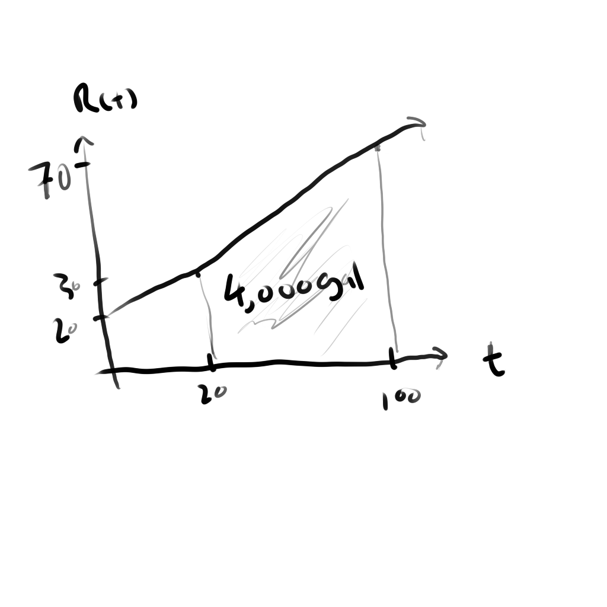

A situation where you need to figure out the rate of change would require differentiation such as
figuring out how fast is th eamount of water change in a tank at whatever specific time (thus making it instantaneous).
If a function is given in that situation representing the amount of water at any time, you'd just
find the derivative of that function and substitute in values at whichever time you need the
instantaneous rate of change for.
What if this is not the case? What if instead of finding the instantaneous rate of change, you want to
figure out how much water or whichever variable has accumulated from certain intervals? Well you'd want to
figure out the net change (definite integral) or the indefinite integral. Definite obviously having a lower and upper limit,
meanwhile indefinite gives you a function that you can substitute a variable in to figure out for example
how much water has accumulated by a certain time.
Question example: The rate of water flowing in a tank can be represented by the function R(t) = 0.5t + 20
where R(t) represents the number of gallons of water flowing per minute and t is the time in minutes. How
much water will accumulate in the tank from t = 20 to t = 100 min?
Without a lower and upper bound you'd just find the indefinite integral, however given such bounds you are seeking
the definite integral...
